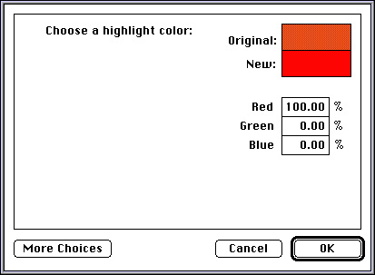

Legacy Document
Important: The information in this document is obsolete and should not be used for new development.
Important: The information in this document is obsolete and should not be used for new development.


Creating a Component Resource for a Color Picker
A color picker is stored as a component resource. It contains a number of resources, including icons, strings, and the standard component resource (a resource of type'thng') required of any Component Manager component. In addition, a color picker must contain code to handle required request codes passed to it by the Component Manager.Your color picker must be contained in a resource file. The creator of the file can be any type you wish, but the type of the file must be
'thng'. If your color picker contains a'BNDL'resource (described in the chapter "Finder Interface" in Inside Macintosh: Macintosh Toolbox Essentials), then the file's bundle bit must be set. To allow other applications to use your color picker, you should place it in the Extensions folder (where it will be automatically registered at startup.) Otherwise, you can use the Component Manager functionRegisterComponentorRegisterComponentResourceto make your color picker available as your application needs it.Listing 2-15 shows the Rez listing of a component resource that describes a color picker.
Listing 2-15 A component resource for a color picker
resource 'thng' (kPickerID, locked) { 'cpkr', /* component type: a color picker */ 'stup', /* component subtype */ 'wave', /* color picker manufacturer */ $00000071, /* control flags */ $000000ff, /* control flags mask */ 'cpkr', /* resource type for color picker's code */ kPickerID, /* resource ID for color picker's code */ 'STR ', /* resource type for color picker's name */ kPickerID, /* resource ID for color picker's name */ 'STR ', /* color picker info resource type */ kInfoID, /* color picker info resource ID */ 'ICN#', /* icon list for color picker */ kPickerID /* icon list resource ID */ };The component resource, and the resources that define the component's code, name, information string, and icon family, must be in the same resource file.Figure 2-5 shows the color picker created with this component resource. This is a very simplistic color picker that uses only editable text fields for specifying a color.
Figure 2-5 An application-created color picker
